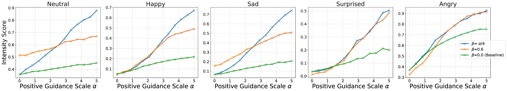

ABSTRACT
Given a piece of text, a video clip, and a reference audio, the movie dubbing task aims to generate speech that aligns with the video while cloning the desired voice. The existing methods have two primary deficiencies: (1) They struggle to simultaneously hold audio-visual sync and achieve clear pronunciation; (2) They lack the capacity to express user-defined emotions. To address these problems, we propose EmoDubber, an emotion-controllable dubbing architecture that allows users to specify emotion type and emotional intensity while satisfying high-quality lip sync and pronunciation. Specifically, we first design Lip-related Prosody Aligning (LPA), which focuses on learning the inherent consistency between lip motion and prosody variation by duration level contrastive learning to incorporate reasonable alignment. Then, we design Pronunciation Enhancing (PE) strategy to fuse the video-level phoneme sequences by efficient conformer to improve speech intelligibility. Next, the speaker identity adapting module aims to decode acoustics prior and inject the speaker style embedding. After that, the proposed Flow-based User Emotion Controlling (FUEC) is used to synthesize waveform by flow matching prediction network conditioned on acoustics prior. In this process, the FUEC determines the gradient direction and guidance scale based on the user's emotion instructions by the positive and negative guidance mechanism, which focuses on amplifying the desired emotion while suppressing others. Extensive experimental results on three benchmark datasets demonstrate favorable performance compared to several state-of-the-art methods.
The source code and trained models will be released publicly: https://github.com/GalaxyCong/EmoDubber.
MODEL ARCHITECTURE
Figure 1: Architecture of the proposed EmoDubber, which consists of four main components: Lip-related Prosody Aligning (LPA) focuses on learning inherent consistency between lip motion and phoneme prosody by duration level contrastive learning; Pronunciation Enhancing (PE) fuses the output of LPA with expanding phoneme sequence by efficient conformer; Speaker Identity Adapting (SIA) aims to generate acoustics prior information μ while injecting speaker style; and Flow-based User Emotion Controlling (FUEC) renders user-specified emotion and intensity E in the flow-matching prediction process using positive and negative guidance.
EXPERIMENTS
Current Dubbing Baselines:
1) V2C-Net (CVPR'22) is a Vanilla dubbing model used for V2C tasks, which aggregates the desired speaker and visual embedding to Mel-Decoder.
2) HPMDubbing (CVPR'23) is a Hierarchical dubbing to bridge fine-grained video representations and speech attributes from three levels.
3) Speaker2Dub (ACM MM'24) is a SOTA pre-trained dubbing method with two-stage strategy to learn pronunciation from an additional TTS corpus.
4) StyleDubber (ACL'24) is a SOTA Dubbing model using multi-scale style learning at the multi-modal phoneme level and acoustics utterance level.
| Sample Chem (Full Video) | ||||||
| Text Content: so when you mix these two, the reaction favors the products and forms a lot of ions. | Ground-Truth | FastSpeech2 | Zero-shot TTS | HPMDubbing | Speaker2Dub | StyleDubber | EmoDubber |
|---|
| Sample Chem (Full Video) | ||||||
| Text Content: well let's just calculate from the ideal gas law. | Ground-Truth | FastSpeech2 | Zero-shot TTS | HPMDubbing | Speaker2Dub | StyleDubber | EmoDubber |
|---|
| Sample Chem (Full Video) | ||||||
|
Text Content: i can do that from the number of moles, the temperature, and the size of the flask. |
Ground-Truth | FastSpeech2 | Zero-shot TTS | HPMDubbing | Speaker2Dub | StyleDubber | EmoDubber |
|---|---|---|---|---|---|---|
| Sample Chem (Full Video) | ||||||
| Text Content: so already we have a prediction from our quantum mechanical understanding of bonding. | Ground-Truth | FastSpeech2 | Zero-shot TTS | HPMDubbing | Speaker2Dub | StyleDubber | EmoDubber |
|---|
| Sample GRID (Full Video) | ||||||
| Text Content: lay blue with d seven now | Ground-Truth | Zero-shot TTS | V2C-Net | HPMDubbing | Speaker2Dub | StyleDubber | EmoDubber |
|---|
| Sample GRID (Full Video) | ||||||
| Text Content: set white by i six please | Ground-Truth | Zero-shot TTS | V2C-Net | HPMDubbing | Speaker2Dub | StyleDubber | EmoDubber |
|---|
| Sample GRID (Full Video) | ||||||
| Text Content: place red at g eight soon | Ground-Truth | Zero-shot TTS | V2C-Net | HPMDubbing | Speaker2Dub | StyleDubber | EmoDubber |
|---|
| Sample GRID (Full Video) | ||||||
| Text Content: lay blue by t eight now | Ground-Truth | Zero-shot TTS | V2C-Net | HPMDubbing | Speaker2Dub | StyleDubber | EmoDubber |
|---|
| Sample V2C-Animation (Full Video) | ||||||
| Text Content: now what? | Ground-Truth | Zero-shot TTS | V2C-Net | HPMDubbing | Speaker2Dub | StyleDubber | EmoDubber |
|---|
| Sample V2C-Animation (Full Video) | ||||||
| Text Content: mom! dad! | Ground-Truth | Zero-shot TTS | V2C-Net | HPMDubbing | Speaker2Dub | StyleDubber | EmoDubber |
|---|
| Sample V2C-Animation (Full Video) | ||||||
| Text Content: I win! Ha! | Ground-Truth | Zero-shot TTS | V2C-Net | HPMDubbing | Speaker2Dub | StyleDubber | EmoDubber |
|---|
Emotion Controlling (Chem)
Figure 2: Intensity performance of EmoDubber on Chem. The horizontal axis shows the positive guidance α, and vertical axis displays the Intensity Score (IS), with different curves for various negative guidance β. Higher IS indicate stronger emotional intensity in audio.
Emotion Controlling (GRID)
Figure 3: Intensity performance of EmoDubber on GRID. The horizontal axis shows the positive guidance α, and vertical axis displays the Intensity Score (IS), with different curves for various negative guidance β. Higher IS indicate stronger emotional intensity in audio.
Emotion Controlling (V2C-Animation)

Figure 4: Intensity performance of EmoDubber on V2C-Animation. The horizontal axis shows the positive guidance α, and vertical axis displays the Intensity Score (IS), with different curves for various negative guidance β. Higher IS indicate stronger emotional intensity in audio.
Recreating Desired Emotion Types based on User Prompts
| Chem |
|
|---|
| GRID |
|
|---|
Supporting Emotion Intensity Adjustment
| V2C |
|
|---|
Emotion Visualizations on the mel-spectrograms level
Figure 5: The proposed Emodubber can achieve high-quality audio-visual alignment and clear pronunciation (top part of the figure), recreate audio with desired emotions based on the user’s instructions (middle part of figure), and control the emotional intensity that allows users to make more fine-grained edits to sentiment (bottom part).
More Audio-Visual Visualizations
Figure 6: The ``green check marks'' represent the correct audio-visual synchronization consistent with the ground truth mel-spectrogram, while the ``gray crosses'' represent failure examples that misalign with ground truth. Through the observation of the highlight regions, it is evident that our model outperforms other SOTA dubbing methods in maintaining audio-visual alignment, which is notably closer to ground truth dubbing. For instance, our method can capture the natural pauses in the speaker's speech (see Chem Benchmark VzvinAckmQU-022 and 7W0cz0oGHGE-005), and our method can reason the correct starting and ending points of speakers in GRID Benchmark (s24-bbbj9p and s26-sgbg7p), which are significant to maintain audio-visual alignment. In contrast, other advanced dubbing methods cannot achieve this.